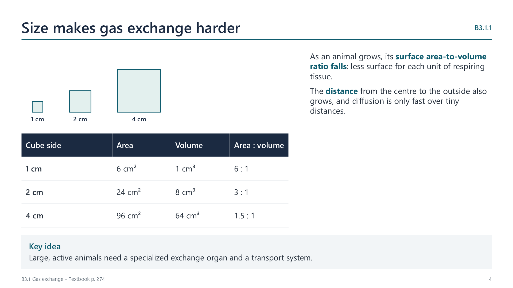

Why every organism needs gas exchange
pp. 273–274Cells respire continuously. Aerobic respiration consumes oxygen and produces carbon dioxide, and both gases move into or out of cells by diffusion. In a single-celled organism, the whole plasma membrane is enough to serve as the exchange surface.
Growth creates two problems. The surface area-to-volume ratio falls, so there is less surface for each unit of respiring tissue. The distance from the centre of the body to the outside also rises, and diffusion is only fast over very short distances. A tough, protective skin makes things worse.
So large, active animals have a specialized exchange organ, and usually a transport system as well.
